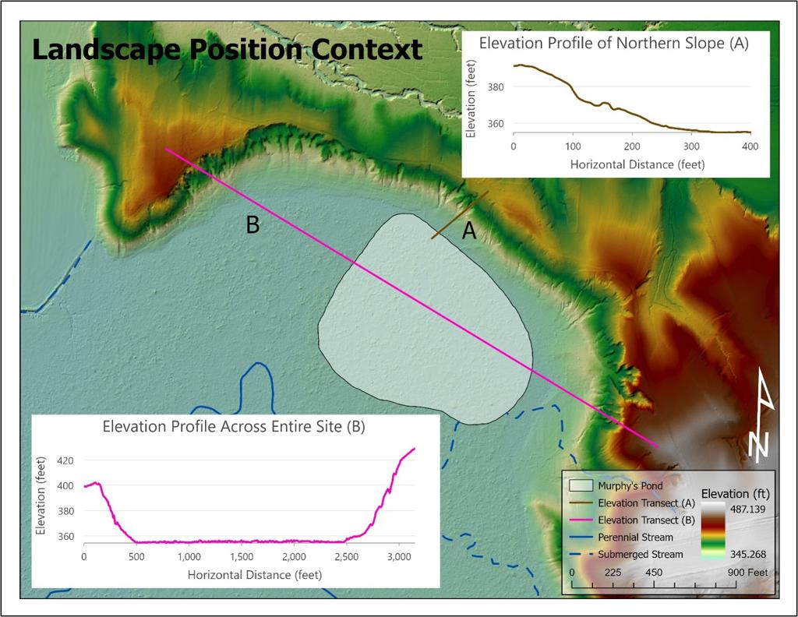
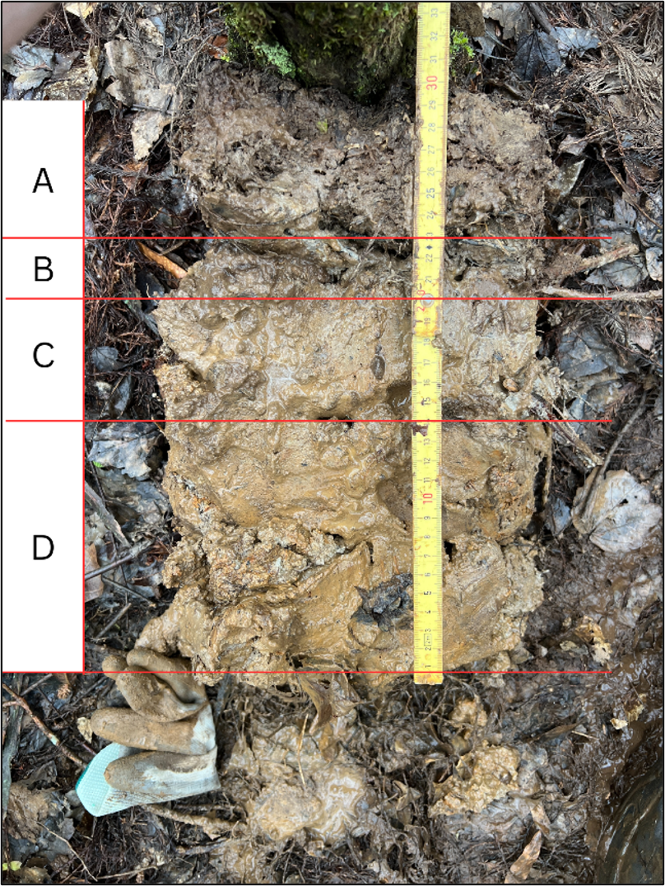
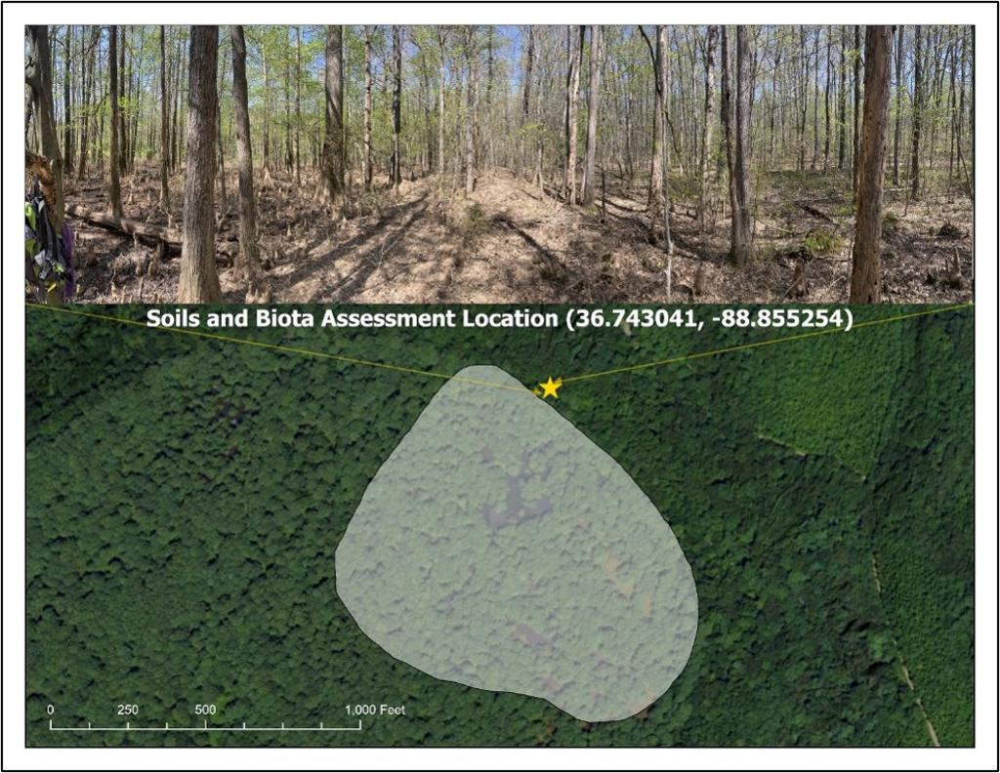
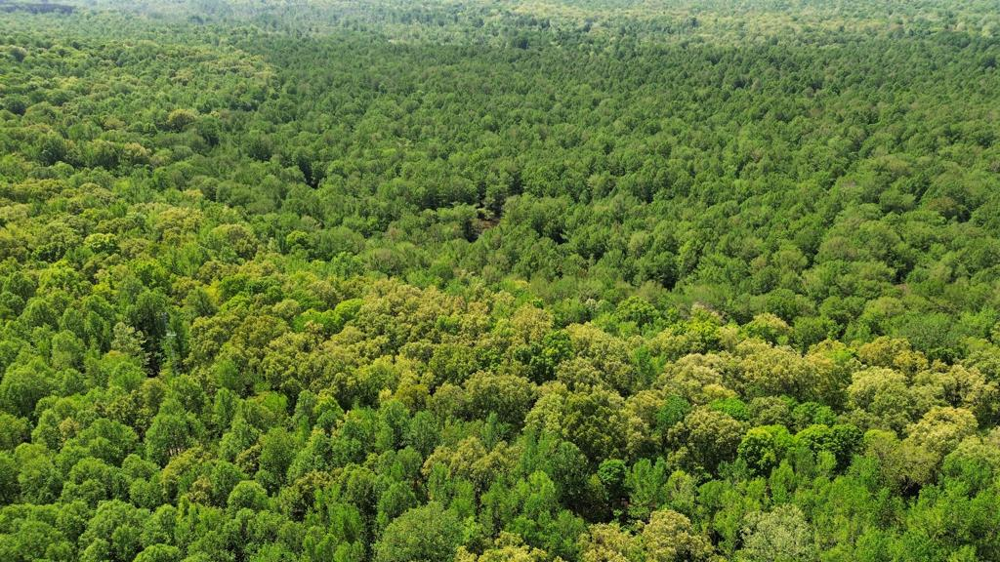

Project
Murphy’s Pond Wetland Assessment
Abstract
Murphy’s Pond is a bald cypress-dominated wetland system in Hickman County, Kentucky, located within the broader Obion Creek landscape. This project assessed the site through wetland classification, hydrologic interpretation, soil profile description, vegetation assessment, and rapid functional evaluation. The National Wetland Inventory classifies the site as a Palustrine Forested/Scrub-Shrub wetland with broad-leaved deciduous vegetation and a semi-permanently flooded water regime.
The assessment interpreted Murphy’s Pond as a transitional hydrogeomorphic setting with both depressional and riverine characteristics. The pond occupies a low-lying geomorphic position along the margin of the Obion Creek floodplain, where precipitation, surface runoff, spring inputs, and periodic floodplain connectivity influence hydrology. Field indicators including surface water, saturated soils, water-stained leaves, sediment deposits, oxidized rhizospheres, and reduced iron supported the site’s wetland hydrology status.
Soil assessment identified hydric soil characteristics consistent with prolonged saturation and reducing conditions, including redox features, gleyed matrix colors, and manganese concretions. Vegetation observations reflected a bottomland hardwood swamp community dominated by bald cypress, with associated wetland-adapted tree, sapling, shrub, vine, and herbaceous species. A KY-WRAM assessment scored the site highly, supporting its ecological value as a functioning wetland with important habitat, hydrologic, and educational significance.
Project Details
Maps and Figures



